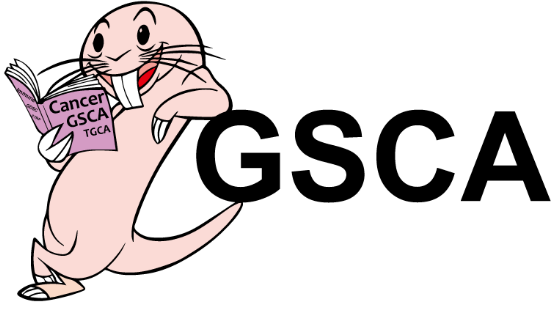
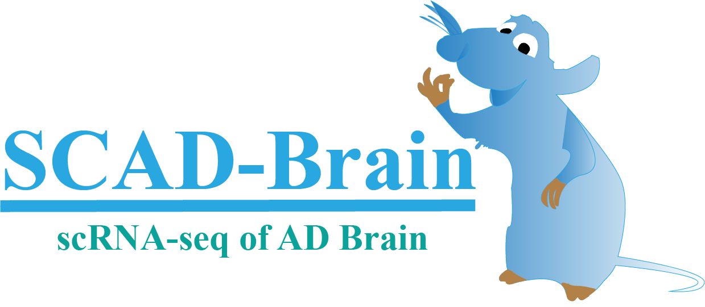

Tools
- GSCALite
GSCALite (Gene Set Cancer Analysis): a user-friendly web server for dynamic analysis and visualization of gene set in cancer and drug sensitivity correlation.
- GSCA
Gene Set Cancer Analysis (GSCA) is an integrated genomic and immunogenomic web-based platform for gene set cancer research.

- RAD-Blood
RAD-Blood (RNA-seq analysis of AD blood) is a web-based analysis platform for RNA sequencing data sets (mRNA-seq, miRNA-seq, and scRNA-seq) from the blood of patients of AD or AD mouse model.
- SCAD-Blood
SCAD-Brain (scRNA-seq of AD Brain) is a web-based platform that analyze scRNA-seq data from brains with Alzheimer's disease (AD).
